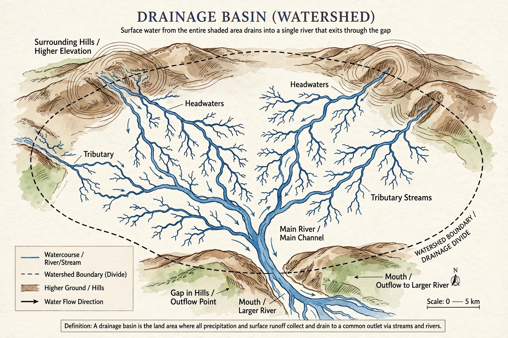

[Image placeholder: A drainage basin: tributaries converging on a single outlet]A **drainage basin** (also catchment, watershed or river basin) is an area of land where all precipitation drains, via streams and rivers, to a common outlet — a larger river, lake, reservoir or ocean. Basins are separated by drainage divides, typically ridge lines. The largest drainage basin on Earth is that of the Amazon River, about 7 million km²; others of continental scale include the Congo, Mississippi and Ob basins.
Within a basin, tributaries join in networks described by Strahler stream order; the shape, slope, soils, vegetation and land use of a basin govern flood behaviour, erosion and water quality far downstream. This is why water management is organised by basin (river basin authorities) rather than by political boundaries, and why upstream pollution or damming — the Nile, Mekong and Tigris–Euphrates disputes — becomes an international issue. Areas that drain to enclosed basins with no ocean outlet are endorheic basins (the Caspian, the Aral, the Great Basin).
The pour point (outlet), the basin's hypsometry (area-elevation distribution), time of concentration, and baseflow versus stormflow all feed hydrological models. 'Watershed' in British usage means the divide itself; North American usage uses it for the whole basin.